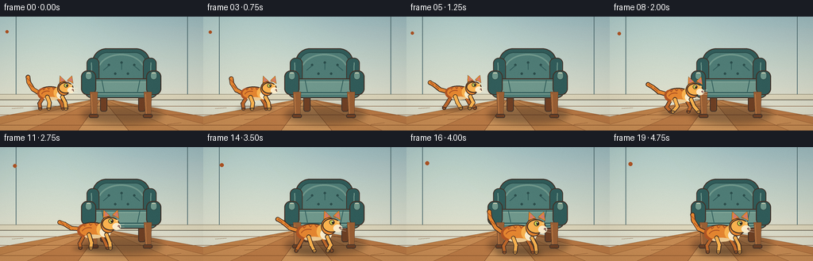
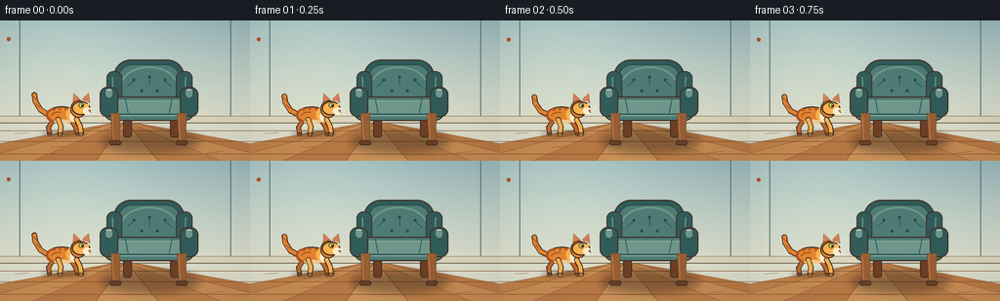
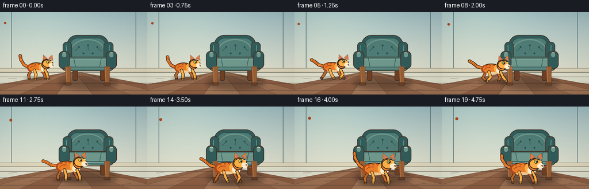
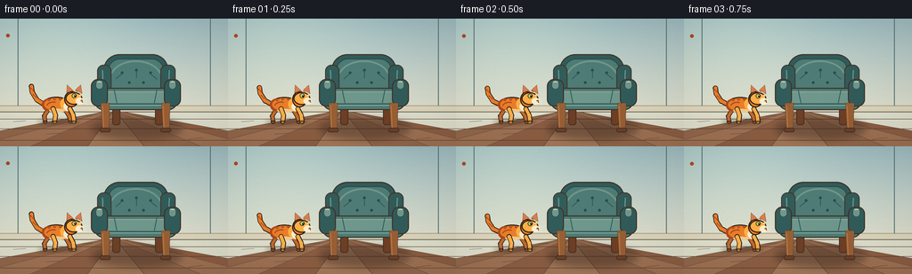

CODING AGENTS AS PIXEL WORLD MODELS
traex/DeepSeek-V4.1-Flash · dynamic_spatial_relationship_0006
点击播放 · 原生 RGB 像素
此结果可播放，但该运行尚未通过最终提交审核。页面展示不代表评测通过。
逐轮保存的候选
回放视频、检查图与代码变化。
每份候选均可单独播放。实际图片检查记录在下方工具轨迹中。
候选 01播放与检查图
点击播放 · 原生 RGB 像素


展开代码变化
--- 上一保存版本
+++ 本次保存版本
@@ -0,0 +1,577 @@
+from __future__ import annotations
+
+import json
+import math
+from pathlib import Path
+
+import numpy as np
+from PIL import Image, ImageDraw, ImageEnhance, ImageFilter
+
+import artifact_io
+
+
+CASE_DIR = Path(__file__).resolve().parent
+SPEC = json.loads((CASE_DIR / "task_spec.json").read_text())
+WIDTH = int(SPEC["width"])
+HEIGHT = int(SPEC["height"])
+FRAMES = int(SPEC["frames"])
+FPS = float(SPEC["fps"])
+SS = 4
+
+
+def rgb(hex_color: str) -> tuple[int, int, int]:
+ value = hex_color.lstrip("#")
+ return tuple(int(value[i : i + 2], 16) for i in (0, 2, 4))
+
+
+def scaled_box(box):
+ return tuple(round(value * SS) for value in box)
+
+
+def scaled_points(points):
+ return [(round(x * SS), round(y * SS)) for x, y in points]
+
+
+def lerp_color(a, b, t):
+ return tuple(round(a[i] + (b[i] - a[i]) * t) for i in range(3))
+
+
+def make_background() -> Image.Image:
+ high_w, high_h = WIDTH * SS, HEIGHT * SS
+ y = np.arange(high_h, dtype=np.float32)[:, None]
+ wall_t = np.clip(y / (103 * SS), 0.0, 1.0)
+ wall_top = np.array(rgb("#9eb9bd"), dtype=np.float32)
+ wall_bottom = np.array(rgb("#d9d9c8"), dtype=np.float32)
+ wall = wall_top * (1.0 - wall_t[..., None]) + wall_bottom * wall_t[..., None]
+ wall = np.broadcast_to(wall, (high_h, high_w, 3)).copy()
+
+ # A soft pool of daylight keeps the room dimensional without distracting from the action.
+ xx = np.arange(high_w, dtype=np.float32)[None, :]
+ glow = np.exp(-(((xx - 54 * SS) / (95 * SS)) ** 2)) * np.clip(
+ 1.0 - y / (118 * SS), 0.0, 1.0
+ )
+ wall += glow[..., None] * np.array([18, 16, 9], dtype=np.float32)
+ image = Image.fromarray(np.clip(wall, 0, 255).astype(np.uint8), "RGB").convert("RGBA")
+ draw = ImageDraw.Draw(image)
+
+ # Wood floor: converging boards, cross seams, and fine grain.
+ floor_top = 103
+ board_colors = [rgb("#b98250"), rgb("#c28c59"), rgb("#b57b4c"), rgb("#c89561")]
+ bottom_edges = [-96, -30, 34, 98, 162, 226, 290, 354]
+ for index in range(len(bottom_edges) - 1):
+ draw.polygon(
+ scaled_points(
+ [
+ (128, floor_top),
+ (bottom_edges[index], HEIGHT),
+ (bottom_edges[index + 1], HEIGHT),
+ ]
+ ),
+ fill=board_colors[index % len(board_colors)],
+ )
+ for edge in bottom_edges:
+ draw.line(
+ scaled_points([(128, floor_top), (edge, HEIGHT)]),
+ fill=rgb("#80512f"),
+ width=max(1, SS // 2),
+ )
+ for seam in (113, 124, 137):
+ draw.line(
+ scaled_points([(0, seam), (WIDTH, seam)]),
+ fill=(121, 78, 47, 115),
+ width=max(1, SS // 2),
+ )
+ for x0, y0, x1, y1 in [
+ (15, 116, 29, 115),
+ (52, 130, 68, 129),
+ (92, 110, 104, 109),
+ (176, 120, 193, 119),
+ (211, 136, 228, 134),
+ ]:
+ draw.line(
+ scaled_points([(x0, y0), (x1, y1)]),
+ fill=(112, 69, 39, 90),
+ width=max(1, SS // 2),
+ )
+
+ # Baseboard and wall edge add a stable architectural frame.
+ draw.rectangle(scaled_box((0, 98, WIDTH, 105)), fill=rgb("#d7d0b9"))
+ draw.line(scaled_points([(0, 98), (WIDTH, 98)]), fill=rgb("#a7a28f"), width=SS)
+ draw.line(scaled_points([(0, 105), (WIDTH, 105)]), fill=rgb("#746f62"), width=SS)
+ for x in (20, 236):
+ draw.line(
+ scaled_points([(x, 0), (x, 98)]),
+ fill=(91, 116, 119, 26),
+ width=SS,
+ )
+
+ return image
+
+
+def add_soft_shadow(image: Image.Image, box, color, blur=3.0) -> None:
+ layer = Image.new("RGBA", image.size, (0, 0, 0, 0))
+ shadow_draw = ImageDraw.Draw(layer)
+ shadow_draw.ellipse(scaled_box(box), fill=color)
+ layer = layer.filter(ImageFilter.GaussianBlur(blur * SS))
+ image.alpha_composite(layer)
+
+
+def draw_chair(image: Image.Image) -> None:
+ add_soft_shadow(image, (103, 113, 204, 135), (54, 41, 33, 105), 4.2)
+ draw = ImageDraw.Draw(image)
+
+ outline = rgb("#44372f")
+ wood_dark = rgb("#6d432b")
+ wood = rgb("#95613b")
+ wood_light = rgb("#b77b4c")
+ teal_dark = rgb("#365d5b")
+ teal = rgb("#527b75")
+ teal_light = rgb("#71958a")
+ teal_highlight = rgb("#8aa99b")
+ cream = rgb("#d7d3b8")
+
+ # Rear legs sit behind the upholstery.
+ for box in [(126, 84, 135, 120), (174, 84, 183, 120)]:
+ draw.rounded_rectangle(
+ scaled_box(box), radius=3 * SS, fill=wood_dark, outline=outline, width=SS
+ )
+
+ # Upholstered back, with a broad highlight and inset cushion.
+ draw.rounded_rectangle(
+ scaled_box((116, 40, 189, 94)),
+ radius=18 * SS,
+ fill=teal_dark,
+ outline=outline,
+ width=round(1.25 * SS),
+ )
+ draw.rounded_rectangle(
+ scaled_box((121, 45, 184, 90)),
+ radius=14 * SS,
+ fill=teal,
+ outline=rgb("#2e4e4c"),
+ width=SS,
+ )
+ draw.arc(
+ scaled_box((123, 47, 182, 88)),
+ start=198,
+ end=342,
+ fill=teal_light,
+ width=2 * SS,
+ )
+ draw.line(
+ scaled_points([(126, 82), (179, 82)]),
+ fill=teal_dark,
+ width=2 * SS,
+ )
+
+ # Small wings and tufting make the silhouette unmistakably a chair.
+ draw.rounded_rectangle(
+ scaled_box((109, 52, 125, 93)),
+ radius=7 * SS,
+ fill=teal_dark,
+ outline=outline,
+ width=SS,
+ )
+ draw.rounded_rectangle(
+ scaled_box((180, 52, 197, 93)),
+ radius=7 * SS,
+ fill=teal_dark,
+ outline=outline,
+ width=SS,
+ )
+ draw.line(
+ scaled_points([(115, 58), (116, 85)]),
+ fill=teal_light,
+ width=round(1.2 * SS),
+ )
+ draw.line(
+ scaled_points([(190, 58), (189, 85)]),
+ fill=teal_light,
+ width=round(1.2 * SS),
+ )
+ for cx, cy in [(137, 61), (153, 58), (169, 61), (145, 72), (161, 72)]:
+ draw.ellipse(
+ scaled_box((cx - 1.4, cy - 1.4, cx + 1.4, cy + 1.4)),
+ fill=rgb("#304f4d"),
+ )
+ for x0, y0, x1, y1 in [(137, 62, 130, 68), (153, 59, 153, 67), (169, 62, 176, 68)]:
+ draw.line(scaled_points([(x0, y0), (x1, y1)]), fill=teal_dark, width=SS)
+
+ # Seat cushion, piping, and a shaded front edge.
+ draw.rounded_rectangle(
+ scaled_box((106, 78, 199, 103)),
+ radius=10 * SS,
+ fill=teal,
+ outline=outline,
+ width=round(1.2 * SS),
+ )
+ draw.rounded_rectangle(
+ scaled_box((112, 82, 193, 98)),
+ radius=7 * SS,
+ fill=teal_light,
+ outline=teal_highlight,
+ width=SS,
+ )
+ draw.line(
+ scaled_points([(113, 96), (192, 96)]),
+ fill=teal_dark,
+ width=round(1.5 * SS),
+ )
+ draw.line(
+ scaled_points([(128, 80), (131, 95)]),
+ fill=teal_dark,
+ width=SS,
+ )
+ draw.line(
+ scaled_points([(176, 80), (173, 95)]),
+ fill=teal_dark,
+ width=SS,
+ )
+
+ # Curved arms with pale piping.
+ for box in [(102, 68, 121, 99), (184, 68, 203, 99)]:
+ draw.rounded_rectangle(
+ scaled_box(box),
+ radius=8 * SS,
+ fill=teal_dark,
+ outline=outline,
+ width=round(1.2 * SS),
+ )
+ for x0, x1 in [(107, 116), (189, 198)]:
+ draw.rounded_rectangle(
+ scaled_box((x0, 69, x1, 80)),
+ radius=5 * SS,
+ fill=teal_light,
+ outline=rgb("#365451"),
+ width=SS,
+ )
+ draw.line(
+ scaled_points([(x0 + 2, 71), (x1 - 2, 71)]),
+ fill=cream,
+ width=SS,
+ )
+
+ # Front legs and feet provide a strong contact line with the floor.
+ for x0, x1 in [(113, 123), (181, 191)]:
+ draw.polygon(
+ scaled_points([(x0, 95), (x1, 95), (x1 - 1, 126), (x0 + 2, 126)]),
+ fill=wood,
+ outline=outline,
+ )
+ draw.line(
+ scaled_points([(x0 + 2, 98), (x0 + 3, 123)]),
+ fill=wood_light,
+ width=SS,
+ )
+ draw.rounded_rectangle(
+ scaled_box((x0 - 1, 123, x1 + 1, 128)),
+ radius=2 * SS,
+ fill=wood_dark,
+ outline=outline,
+ width=SS,
+ )
+
+
+def thick_polyline(draw, points, width, fill, outline=None):
+ if outline is not None:
+ draw.line(
+ scaled_points(points),
+ fill=outline,
+ width=round((width + 1.7) * SS),
+ joint="curve",
+ )
+ for point in points:
+ radius = (width + 1.7) * SS / 2
+ draw.ellipse(
+ (
+ round(point[0] * SS - radius),
+ round(point[1] * SS - radius),
+ round(point[0] * SS + radius),
+ round(point[1] * SS + radius),
+ ),
+ fill=outline,
+ )
+ draw.line(
+ scaled_points(points),
+ fill=fill,
+ width=round(width * SS),
+ joint="curve",
+ )
+ for point in points:
+ radius = width * SS / 2
+ draw.ellipse(
+ (
+ round(point[0] * SS - radius),
+ round(point[1] * SS - radius),
+ round(point[0] * SS + radius),
+ round(point[1] * SS + radius),
+ ),
+ fill=fill,
+ )
+
+
+def draw_cat(image: Image.Image, x, y, scale, phase, running, tail_phase) -> None:
+ add_soft_shadow(
+ image,
+ (x - 25 * scale, y - 2.5 * scale, x + 28 * scale, y + 3.5 * scale),
+ (45, 33, 26, 80),
+ 2.4 * scale,
+ )
+ draw = ImageDraw.Draw(image)
+
+ outline = rgb("#3f3029")
+ ginger_dark = rgb("#a9582d")
+ ginger = rgb("#dc8739")
+ ginger_light = rgb("#f0b057")
+ cream = rgb("#f5e7c9")
+ pink = rgb("#c57a78")
+ amber = rgb("#c9d35b")
+ far_ginger = rgb("#b96b34")
+
+ bob = 0.0
+ if running:
+ bob = -1.15 * abs(math.sin(phase)) * scale
+ else:
+ bob = 0.28 * math.sin(tail_phase * 0.7) * scale
+
+ def pt(px, py):
+ return (x + px * scale, y + py * scale + bob)
+
+ def box(x0, y0, x1, y1):
+ p0, p1 = pt(x0, y0), pt(x1, y1)
+ return (p0[0], p0[1], p1[0], p1[1])
+
+ def ellipse(x0, y0, x1, y1, fill, edge=None, edge_width=0.0):
+ draw.ellipse(
+ scaled_box(box(x0, y0, x1, y1)),
+ fill=fill,
+ outline=edge,
+ width=round(edge_width * SS),
+ )
+
+ # Tail is behind the body. Its tip lifts while idle and streams backward in a run.
+ tail_wave = math.sin(tail_phase)
+ if running:
+ tail_points = [
+ pt(-17, -23),
+ pt(-26, -25 + 1.2 * tail_wave),
+ pt(-34, -31 + 2.3 * tail_wave),
+ pt(-40, -34 + 3.2 * tail_wave),
+ ]
+ else:
+ tail_points = [
+ pt(-17, -22),
+ pt(-25, -27 + 1.2 * tail_wave),
+ pt(-31, -37 + 1.8 * tail_wave),
+ pt(-32, -44 + 2.2 * tail_wave),
+ ]
+ thick_polyline(draw, tail_points, 4.0, ginger, outline)
+ for p0, p1 in zip(tail_points[1:], tail_points[2:]):
+ mx, my = (p0[0] + p1[0]) / 2, (p0[1] + p1[1]) / 2
+ thick_polyline(draw, [(mx - 1.8 * scale, my - 1.7 * scale), (mx + 1.8 * scale, my + 1.7 * scale)], 1.25, ginger_dark)
+ tip = tail_points[-1]
+ draw.ellipse(
+ (
+ tip[0] - 2.2 * scale * SS,
+ tip[1] - 2.2 * scale * SS,
+ tip[0] + 2.2 * scale * SS,
+ tip[1] + 2.2 * scale * SS,
+ ),
+ fill=ginger_dark,
+ )
+
+ swing = math.sin(phase) if running else 0.0
+ lift = abs(math.cos(phase)) if running else 0.0
+
+ # Far legs use the shadowed ginger so the gait still reads at thumbnail size.
+ far_legs = [
+ [(-11, -15), (-16, -7 + 1.5 * lift), (-15 - 5.5 * swing, -0.3)],
+ [(10, -15), (15, -7 + 1.5 * lift), (17 + 5.5 * swing, -0.3)],
+ ]
+ for leg in far_legs:
+ thick_polyline(draw, [pt(px, py) for px, py in leg], 3.4, far_ginger, outline)
+ px, py = leg[-1]
+ ellipse(px - 2.1, py - 1.2, px + 2.3, py + 0.8, far_ginger, outline, 0.8)
+
+ # Main torso and haunch.
+ ellipse(-19, -31, 17, -12, ginger, outline, 1.15)
+ ellipse(-19, -29, -2, -13, ginger_dark, None)
+ ellipse(-16, -29, 11, -14, ginger, None)
+ ellipse(4, -31, 22, -13, ginger_light, None)
+
+ # Pale chest and belly.
+ ellipse(8, -25, 21, -13, cream, None)
+ ellipse(-10, -16, 10, -11.5, rgb("#e7c896"), None)
+
+ # Tabby markings.
+ for x0, x1, yy in [(-12, -8, -29), (-5, -1, -30), (2, 6, -30)]:
+ draw.line(
+ scaled_points([pt(x0, yy), pt((x0 + x1) / 2, yy + 3), pt(x1, yy + 1)]),
+ fill=ginger_dark,
+ width=round(1.35 * SS),
+ joint="curve",
+ )
+ draw.arc(
+ scaled_box(box(-14, -25, 4, -12)),
+ start=197,
+ end=292,
+ fill=ginger_dark,
+ width=round(1.2 * SS),
+ )
+
+ # Near legs overlap the torso and alternate with the far pair.
+ near_legs = [
+ [(-5, -16), (-2, -8 + 1.8 * lift), (-3 + 6.0 * swing, -0.2)],
+ [(16, -16), (20, -8 + 1.8 * lift), (21 - 6.0 * swing, -0.2)],
+ ]
+ for leg in near_legs:
+ thick_polyline(draw, [pt(px, py) for px, py in leg], 3.8, ginger_light, outline)
+ px, py = leg[-1]
+ ellipse(px - 2.3, py - 1.3, px + 2.5, py + 0.9, ginger_light, outline, 0.85)
+
+ # Neck and head.
+ ellipse(9, -38, 27, -18, ginger, outline, 1.1)
+ ellipse(10.5, -37, 31.5, -21, ginger_light, outline, 1.15)
+
+ # Ears, including warm inner ear shapes.
+ left_ear = [pt(12, -36), pt(12.5, -46), pt(20, -39)]
+ right_ear = [pt(23, -40), pt(29.5, -46), pt(31, -35)]
+ draw.polygon(scaled_points(left_ear), fill=ginger, outline=outline)
+ draw.polygon(scaled_points(right_ear), fill=ginger, outline=outline)
+ draw.polygon(
+ scaled_points([pt(14, -38), pt(14.2, -43.6), pt(18.2, -39.2)]),
+ fill=pink,
+ )
+ draw.polygon(
+ scaled_points([pt(25.3, -39.7), pt(29.0, -43.4), pt(29.6, -37.7)]),
+ fill=pink,
+ )
+
+ # White muzzle, eye, nose, and whiskers.
+ ellipse(23, -30, 33, -21.5, cream, None)
+ ellipse(18.3, -35.3, 24.2, -29.5, amber, outline, 0.65)
+ ellipse(21.0, -34.1, 23.5, -30.7, rgb("#2f2b22"), None)
+ draw.ellipse(
+ scaled_box(box(21.7, -34.0, 22.7, -32.9)),
+ fill=rgb("#f7f1dd"),
+ )
+ draw.ellipse(
+ scaled_box(box(29.4, -27.2, 31.9, -25.1)),
+ fill=pink,
+ outline=outline,
+ width=SS // 2,
+ )
+ draw.line(scaled_points([pt(31, -25.8), pt(31.8, -24.2)]), fill=outline, width=SS)
+ for y0, y1 in [(-27.5, -28.8), (-25.5, -25.2), (-23.7, -22.5)]:
+ draw.line(
+ scaled_points([pt(30, y0), pt(37, y1)]),
+ fill=(249, 239, 216, 220),
+ width=max(1, SS // 2),
+ )
+ draw.line(
+ scaled_points([pt(18, -38.5), pt(21, -37.8)]),
+ fill=ginger_dark,
+ width=SS,
+ )
+ draw.line(
+ scaled_points([pt(22.5, -39), pt(25.3, -37.7)]),
+ fill=ginger_dark,
+ width=SS,
+ )
+
+ # A tiny highlight on the cheek catches the room light.
+ ellipse(27, -34, 30, -31.5, rgb("#f5c77c"), None)
+
+
+def smoothstep(value: float) -> float:
+ value = max(0.0, min(1.0, value))
+ return value * value * (3.0 - 2.0 * value)
+
+
+def render_frame(background: Image.Image, index: int) -> np.ndarray:
+ image = background.copy()
+ draw_chair(image)
+
+ if index < 4:
+ progress = 0.0
+ phase = index * 0.62
+ running = False
+ elif index == 4:
+ progress = 0.025
+ phase = 0.0
+ running = False
+ elif index < 16:
+ progress = smoothstep((index - 4) / 11.0)
+ phase = (index - 4) * 1.34
+ running = True
+ else:
+ progress = 1.0
+ phase = 0.0
+ running = False
+
+ x = 64.0 + 76.0 * progress
+ y = 116.0 + 16.5 * progress
+ scale = 0.90 + 0.22 * progress
+ if index == 4:
+ y += 1.2
+ scale *= 0.98
+
+ tail_phase = index * 0.72
+ draw_cat(image, x, y, scale, phase, running, tail_phase)
+
+ frame = image.convert("RGB").resize((WIDTH, HEIGHT), Image.Resampling.LANCZOS)
+ frame = ImageEnhance.Contrast(frame).enhance(1.035)
+ frame = ImageEnhance.Color(frame).enhance(1.06)
+
+ pixels = np.asarray(frame, dtype=np.float32)
+ yy, xx = np.mgrid[0:HEIGHT, 0:WIDTH].astype(np.float32)
+ nx = (xx - WIDTH / 2) / (WIDTH / 2)
+ ny = (yy - HEIGHT / 2) / (HEIGHT / 2)
+ vignette = 1.0 - 0.075 * np.clip((nx * nx + ny * ny) / 1.8, 0.0, 1.0)
+ light = 1.012 + 0.018 * (1.0 - xx / WIDTH)
+ rng = np.random.default_rng(3100 + index)
+ grain = rng.normal(0.0, 0.55, (HEIGHT, WIDTH, 1))
+ pixels = pixels * vignette[..., None] * light[..., None] + grain
+ return np.clip(np.rint(pixels), 0, 255).astype(np.uint8)
+
+
+def save_video(frames: np.ndarray) -> None:
+ try:
+ import cv2
+
+ writer = cv2.VideoWriter(
+ str(CASE_DIR / "video.mp4"),
+ cv2.VideoWriter_fourcc(*"mp4v"),
+ FPS,
+ (WIDTH, HEIGHT),
+ )
+ if not writer.isOpened():
+ raise RuntimeError("OpenCV MP4 writer unavailable")
+ for frame in frames:
+ writer.write(cv2.cvtColor(frame, cv2.COLOR_RGB2BGR))
+ writer.release()
+ except Exception as exc:
+ print(f"MP4 encoding skipped: {exc}")
+
+ images = [Image.fromarray(frame) for frame in frames]
+ images[0].save(
+ CASE_DIR / "video.gif",
+ save_all=True,
+ append_images=images[1:],
+ duration=round(1000 / FPS),
+ loop=0,
+ optimize=False,
+ )
+
+
+def main() -> None:
+ background = make_background()
+ frames = np.stack([render_frame(background, index) for index in range(FRAMES)])
+ artifact_io.save(frames, CASE_DIR)
+ save_video(frames)
+ print(f"Generated {FRAMES} RGB frames at {WIDTH}x{HEIGHT}, {FPS:g} fps")
+ print(f"Artifacts: {CASE_DIR / 'pixels.npz'}, {CASE_DIR / 'frames'}, {CASE_DIR / 'video.mp4'}")
+
+
+if __name__ == "__main__":
+ main()
候选 02播放与检查图
点击播放 · 原生 RGB 像素


展开代码变化
--- 上一保存版本
+++ 本次保存版本
@@ -51,12 +51,12 @@
1.0 - y / (118 * SS), 0.0, 1.0
)
wall += glow[..., None] * np.array([18, 16, 9], dtype=np.float32)
- image = Image.fromarray(np.clip(wall, 0, 255).astype(np.uint8), "RGB").convert("RGBA")
+ image = Image.fromarray(np.clip(wall, 0, 255).astype(np.uint8)).convert("RGBA")
draw = ImageDraw.Draw(image)
# Wood floor: converging boards, cross seams, and fine grain.
floor_top = 103
- board_colors = [rgb("#b98250"), rgb("#c28c59"), rgb("#b57b4c"), rgb("#c89561")]
+ board_colors = [rgb("#8f684f"), rgb("#9b7257"), rgb("#896048"), rgb("#a0785c")]
bottom_edges = [-96, -30, 34, 98, 162, 226, 290, 354]
for index in range(len(bottom_edges) - 1):
draw.polygon(
@@ -72,13 +72,13 @@
for edge in bottom_edges:
draw.line(
scaled_points([(128, floor_top), (edge, HEIGHT)]),
- fill=rgb("#80512f"),
+ fill=rgb("#604839"),
width=max(1, SS // 2),
)
for seam in (113, 124, 137):
draw.line(
scaled_points([(0, seam), (WIDTH, seam)]),
- fill=(121, 78, 47, 115),
+ fill=(82, 61, 50, 125),
width=max(1, SS // 2),
)
for x0, y0, x1, y1 in [
@@ -90,7 +90,7 @@
]:
draw.line(
scaled_points([(x0, y0), (x1, y1)]),
- fill=(112, 69, 39, 90),
+ fill=(74, 54, 45, 100),
width=max(1, SS // 2),
)
@@ -319,10 +319,10 @@
)
draw = ImageDraw.Draw(image)
- outline = rgb("#3f3029")
- ginger_dark = rgb("#a9582d")
- ginger = rgb("#dc8739")
- ginger_light = rgb("#f0b057")
+ outline = rgb("#30251f")
+ ginger_dark = rgb("#a54d26")
+ ginger = rgb("#e17f32")
+ ginger_light = rgb("#f4ad4f")
cream = rgb("#f5e7c9")
pink = rgb("#c57a78")
amber = rgb("#c9d35b")
@@ -394,7 +394,7 @@
ellipse(px - 2.1, py - 1.2, px + 2.3, py + 0.8, far_ginger, outline, 0.8)
# Main torso and haunch.
- ellipse(-19, -31, 17, -12, ginger, outline, 1.15)
+ ellipse(-19, -31, 17, -12, ginger, outline, 1.35)
ellipse(-19, -29, -2, -13, ginger_dark, None)
ellipse(-16, -29, 11, -14, ginger, None)
ellipse(4, -31, 22, -13, ginger_light, None)
@@ -430,8 +430,8 @@
ellipse(px - 2.3, py - 1.3, px + 2.5, py + 0.9, ginger_light, outline, 0.85)
# Neck and head.
- ellipse(9, -38, 27, -18, ginger, outline, 1.1)
- ellipse(10.5, -37, 31.5, -21, ginger_light, outline, 1.15)
+ ellipse(9, -38, 27, -18, ginger, outline, 1.3)
+ ellipse(10.5, -37, 31.5, -21, ginger_light, outline, 1.35)
# Ears, including warm inner ear shapes.
left_ear = [pt(12, -36), pt(12.5, -46), pt(20, -39)]
可观测工具轨迹
实际执行的命令与返回图片。
命令 1exit 0
/bin/bash -c "pwd && rg --files -g 'prompt.txt' -g 'GENERATION_RULES.md' -g 'task_spec.json' -g '"'!**/.git/**'"'"
命令 2exit 0
/bin/bash -c "git status --short && find . -maxdepth 2 -type f -not -path './.git/*' -printf '%p\\n' | sort | head -200"
命令 3exit 0
/bin/bash -c 'cat prompt.txt'
命令 4exit 0
/bin/bash -c 'cat GENERATION_RULES.md'
命令 5exit 0
/bin/bash -c 'cat task_spec.json'
命令 6exit 0
/bin/bash -c "sed -n '1,240p' artifact_io.py"
命令 7exit 0
/bin/bash -c "sed -n '1,240p' player_template.html"
命令 8exit 0
/bin/bash -c "find . -maxdepth 3 -type f -printf '%p %s bytes\\n' | sort"
命令 9exit 0
/bin/bash -c "python - <<'PY'
import numpy, PIL
print('numpy', numpy.__version__)
print('PIL', PIL.__version__)
PY"命令 10exit 0
/bin/bash -c "command -v ffmpeg || true; command -v convert || true; python - <<'PY' import importlib.util for x in ['cv2','imageio','scipy']: print(x, bool(importlib.util.find_spec(x))) PY"
命令 11exit 0
/bin/bash -c 'python generate.py'
命令 12exit 0
/bin/bash -c 'command -v chafa || true; command -v viu || true; command -v img2txt || true; command -v jp2 || true'
命令 13exit 0
/bin/bash -c "python - <<'PY'
from PIL import Image
im=Image.open('inspection.png')
print(im.size, im.mode)
# Print a compact color-class ASCII version of key frames.
for i in [0,4,8,12,16,19]:
f=Image.open(f'frames/{i:02d}.png').convert('RGB')
small=f.resize((64,36), Image.Resampling.BILINEAR)
print('\\nFRAME',i)
for y in range(0,36,2):
row=''
for x in range(64):
r,g,b=small.getpixel((x,y))
if r>160 and g>85 and b<105 and r>g*1.25: c='C'
elif g>r*0.85 and g>b*0.92 and 40<g<160 and r<145: c='H'
elif r>130 and g>85 and b<105: c='f'
elif b>g and g>r: c='W'
else: c='.'
row+=c
print(row)
PY"命令 14exit 0
/bin/bash -c "python - <<'PY'
from PIL import Image
import numpy as np
# Measure the actual foreground cat versus chair color masks in all frames.
for i in range(20):
a=np.asarray(Image.open(f'frames/{i:02d}.png').convert('RGB')).astype(int)
r,g,b=a[:,:,0],a[:,:,1],a[:,:,2]
cat=(r>145)&(r>g*1.25)&(g>b*1.15)&(b<145)
chair=(g>r*0.82)&(g>b*0.92)&(r<145)&(g<175)
ys,xs=np.where(cat)
chy,chx=np.where(chair)
print(i, 'cat', (xs.min(),ys.min(),xs.max(),ys.max()) if len(xs) else None, 'chair', (chx.min(),chy.min(),chx.max(),chy.max()) if len(chx) else None)
PY"命令 15exit 0
/bin/bash -c "python - <<'PY'
import cv2, numpy as np
for i in [0,4,8,12,16,19]:
a=cv2.imread(f'frames/{i:02d}.png')
cv2.imwrite(f'/tmp/frame_{i:02d}_4x.png', cv2.resize(a, None, fx=4, fy=4, interpolation=cv2.INTER_NEAREST))
print('wrote previews')
PY"命令 16exit 0
/bin/bash -c "python - <<'PY'
from PIL import Image
import numpy as np
for i in [0,4,8,12,16,19]:
im=np.asarray(Image.open(f'frames/{i:02d}.png')).astype(float)
r,g,b=im[:,:,0],im[:,:,1],im[:,:,2]
# saturation / warm mask restricted to plausible scene area
sat=im.max(2)-im.min(2)
m=(sat>60)&(r>120)&(g<170)
ys,xs=np.where(m)
print(i, 'warm sat bbox', xs.min(),ys.min(),xs.max(),ys.max(), 'n',m.sum())
PY"命令 17exit 0
/bin/bash -c "python - <<'PY'
from PIL import Image, ImageDraw
import numpy as np
# Build cat-isolation diagnostics by comparing scene frame to same background with chair only.
import generate
bg=generate.make_background()
chair=bg.copy(); generate.draw_chair(chair)
chair=chair.convert('RGB').resize((256,144),Image.Resampling.LANCZOS)
for i in [0,4,8,12,16,19]:
im=np.asarray(Image.open(f'frames/{i:02d}.png')).astype(int)
ref=np.asarray(chair).astype(int)
diff=np.abs(im-ref).max(2)
m=diff>12
ys,xs=np.where(m)
print(i, (xs.min(),ys.min(),xs.max(),ys.max()), 'area',m.sum())
PY"命令 18exit 0
/bin/bash -c "python - <<'PY'
from PIL import Image
import numpy as np
# Crop the central composition from the rendered frames and report changed pixels per transition.
frames=[np.asarray(Image.open(f'frames/{i:02d}.png')).astype(np.int16) for i in range(20)]
for i in range(1,20):
d=np.abs(frames[i]-frames[i-1]).max(2)>8
ys,xs=np.where(d)
print(f'{i-1:02d}->{i:02d}: changed={d.sum():4d}, bbox={(xs.min(),ys.min(),xs.max(),ys.max()) if d.any() else None}')
PY"命令 19exit 0
/bin/bash -c "python - <<'PY'
from PIL import Image
import numpy as np
for idx, box in [(0,(30,60,100,125)),(12,(60,50,175,140)),(19,(95,65,190,144))]:
im=np.asarray(Image.open(f'frames/{idx:02d}.png')).astype(int)
x0,y0,x1,y1=box
crop=im[y0:y1,x0:x1]
# 2x2 pooling, character map around actual scene colors
h,w=crop.shape[:2]
crop=crop[:h//2*2,:w//2*2].reshape(h//2,2,w//2,2,3).mean((1,3))
print('\\nFRAME',idx)
for row in crop:
s=''
for r,g,b in row:
if r<70 and g<65 and b<60: c='@'
elif r<110 and g<80 and b<75: c='#'
elif r>225 and g>205 and b>165: c='W'
elif r>185 and g>105 and b<115 and r>g*1.22: c='O'
elif r>135 and g>75 and b<95 and r>g*1.15: c='o'
elif g>r*1.02 and b>r*.85 and g>65 and r<145: c='H'
elif r>175 and g>150 and b<150: c='y'
elif r>135 and g>105 and b>80: c='f'
else: c='.'
s+=c
print(s)
PY"命令 20exit 0
/bin/bash -c "python - <<'PY'
from PIL import Image
import numpy as np
im=Image.open('frames/00.png').convert('RGB')
# report representative color regions and local contrast
for xy in [(10,100),(30,90),(50,100),(128,30),(150,60),(128,120),(240,40)]: print(xy, im.getpixel(xy))
a=np.asarray(im).astype(float)
print('std',a.std(axis=(0,1)),'mean',a.mean(axis=(0,1)))
PY"命令 21exit 0
/bin/bash -c "python - <<'PY'
import cv2, numpy as np
for i in [0,4,8,12,16,19]:
im=cv2.cvtColor(cv2.imread(f'frames/{i:02d}.png'), cv2.COLOR_BGR2RGB).astype(int)
r,g,b=im[:,:,0],im[:,:,1],im[:,:,2]
m=((r>150)&(r>g*1.28)&(g>b*1.35)&(b<115)).astype('uint8')
n,lab,stats,cent=cv2.connectedComponentsWithStats(m,8)
comps=sorted([(s[4],tuple(s[:4]),tuple(c)) for s,c in zip(stats[1:],cent[1:]) if s[4]>=5],reverse=True)
print(i, comps[:5])
PY"命令 22exit 0
/bin/bash -c 'mkdir -p .tmp/candidate_01 && cp -r frames pixels.npz inspection.png transition_check.png index.html video.mp4 video.gif .tmp/candidate_01/'
命令 23exit 0
/bin/bash -c "python - <<'PY'
from PIL import Image
import numpy as np
im=np.asarray(Image.open('frames/00.png')).astype(int)
# summarize average colors in cat bbox (approx) and chair bbox
for name,box in [('cat',(30,70,95,120)),('chair',(115,45,195,125)),('floor',(0,115,90,144))]:
x0,y0,x1,y1=box; a=im[y0:y1,x0:x1]
print(name, a.reshape(-1,3).mean(0).round(1), a.reshape(-1,3).std(0).round(1))
PY"命令 24exit 0
/bin/bash -c 'python generate.py'
命令 25exit 0
/bin/bash -c "python - <<'PY'
from pathlib import Path
import json, cv2, numpy as np
from PIL import Image
spec=json.loads(Path('task_spec.json').read_text())
z=np.load('pixels.npz')
p=z['pixels']
print('npz', p.shape, p.dtype, 'expected', (spec['height'],spec['width'],spec['frames']))
print('png frames', len(list(Path('frames').glob('*.png'))))
cap=cv2.VideoCapture('video.mp4')
print('mp4', int(cap.get(cv2.CAP_PROP_FRAME_WIDTH)), int(cap.get(cv2.CAP_PROP_FRAME_HEIGHT)), int(cap.get(cv2.CAP_PROP_FRAME_COUNT)), cap.get(cv2.CAP_PROP_FPS), 'duration', cap.get(cv2.CAP_PROP_FRAME_COUNT)/cap.get(cv2.CAP_PROP_FPS))
cap.release()
print('index bytes', Path('index.html').stat().st_size, 'npz bytes', Path('pixels.npz').stat().st_size, 'mp4 bytes', Path('video.mp4').stat().st_size)
for i in [0,8,19]:
im=Image.open(f'frames/{i:02d}.png')
print(i, im.mode, im.size)
PY"命令 26exit 0
/bin/bash -c "python - <<'PY'
from PIL import Image
import numpy as np
# Compare candidate 1 and final with simple foreground separation and palette metrics.
for label, folder in [('candidate1','.tmp/candidate_01/frames'),('final','frames')]:
vals=[]
for i in [0,8,12,19]:
a=np.asarray(Image.open(f'{folder}/{i:02d}.png')).astype(float)
r,g,b=a[:,:,0],a[:,:,1],a[:,:,2]
sat=a.max(2)-a.min(2)
orange=(r>155)&(r>g*1.2)&(g>b*1.28)&(sat>75)
vals.append((i,orange.sum(),round(a.mean(),1),round(a.std(),1)))
print(label, vals)
PY"命令 27exit 0
/bin/bash -c "python - <<'PY'
from PIL import Image
import numpy as np
# Print RGB grids from central crops after final contrast pass, with a compact edge-aware palette.
for idx, box in [(0,(32,68,97,122)),(12,(65,55,180,142)),(19,(95,68,190,144))]:
im=np.asarray(Image.open(f'frames/{idx:02d}.png')).astype(int)
x0,y0,x1,y1=box
crop=im[y0:y1,x0:x1]
print('\\nFRAME',idx)
for row in crop[::2]:
s=''
for r,g,b in row[::2]:
if r>185 and 95<g<175 and b<105 and r>g*1.18: c='O'
elif r>135 and 55<g<135 and b<95 and r>g*1.13: c='o'
elif r>190 and g>165 and b>125: c='W'
elif g>r*.86 and g>b*.92 and r<145 and g<165: c='H'
elif r<75 and g<65 and b<60: c='@'
elif r>145 and g>125 and b>100: c='.'
else: c=' '
s+=c
print(s.rstrip())
PY"命令 28exit 0
/bin/bash -c "python - <<'PY'
import cv2, numpy as np
from PIL import Image
# Locate cat's orange silhouette using connected components in the final render.
for i in range(20):
im=np.asarray(Image.open(f'frames/{i:02d}.png')).astype(int)
r,g,b=im[:,:,0],im[:,:,1],im[:,:,2]
m=((r>170)&(r>g*1.20)&(g>b*1.24)&(b<150)).astype('uint8')
n,lab,stats,cent=cv2.connectedComponentsWithStats(m,8)
comps=[s for s in stats[1:] if s[4]>20]
comps=sorted(comps,key=lambda s:s[4],reverse=True)
# exclude floor components by requiring some pixels above y=112 OR x > 90
comps=[s for s in comps if s[1]<112 or s[0]>90]
if comps:
s=comps[0]; print(i, tuple(int(v) for v in s))
else: print(i,None)
PY"命令 29exit 0
/bin/bash -c "python - <<'PY'
from pathlib import Path
import numpy as np
from PIL import Image
z=np.load('pixels.npz')['pixels']
print('packed shape',z.shape, 'unique colors',len(np.unique(z)))
# Check sequential unpacking matches saved PNGs exactly.
frames=[]
prev=None
for i in range(z.shape[2]):
p=z[:,:,i].astype(np.uint32)
rgb=np.stack([(p>>16)&255,(p>>8)&255,p&255],axis=2).astype(np.uint8)
frames.append(rgb)
for i in [0,7,19]:
print(i, np.array_equal(frames[i],np.asarray(Image.open(f'frames/{i:02d}.png'))))
PY"命令 30exit 0
/bin/bash -c 'python -m py_compile generate.py && git status --short -- generate.py task_spec.json prompt.txt GENERATION_RULES.md frames pixels.npz inspection.png transition_check.png index.html video.mp4 video.gif 2>/dev/null || true && du -sh frames pixels.npz index.html video.mp4 video.gif inspection.png transition_check.png'
保存候选 2 份；完成命令 30 次；可验证图片返回 0 张。原始 API 响应与完整日志保留在本地。